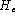

This program will read in a word network definition in standard HTK lattice format representing a Regular Grammar G and randomly generate sentences from the language L(G) of G. The sentences are written to standard output, one per line and an option is provided to number them if required.
The empirical entropy  can also be calculated using the formula
where is the k'th sentence generated and is its length. The perplexity is computed from by

The probability of each sentence is computed from the product of the individual branch probabilities.